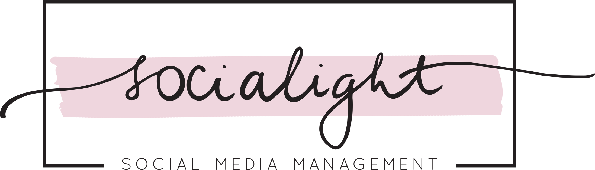

Hogyan találd meg a tökéletes hashtageket a vállalkozásod számára? Útmutató a hatásos hashtagek használatához, szerelemvállalkozók számára.
Növeld vállalkozásod sikerét és érj el még több felhasználót az Instagramon ezzel az egyszerű, mégis kevesek által alkalmazott módszerrel! Megmutatom hogyan válhatsz népszerűbbé 2019 egyik legtöbbek által használt közösségi felületén, hirdetés- és stresszmentesen. Célom, hogy minél több vállalkozó váljon tudatosabbá az Instagram használatában, és lelje örömét ezáltal az online jelenlétben.